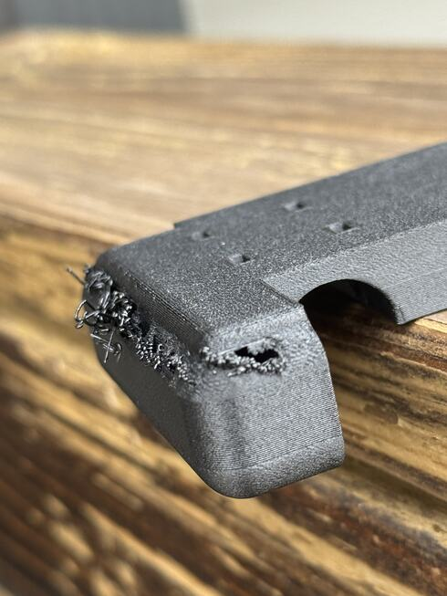

Landing 2 · Lean · from the bed
Start a round with a chamfer.
A round edge that begins on the bed grows outward as it rises: each course is wider than the last. Printed in fine layers, its edges drew back and the next course came down on air. The fan did not fix it. The shape did.
Seen in PET-GF · Mark2 and Mark 1, September 2026 · textured PEI · left 0.4 mmNot tried in: any other plastic
About twenty courses go down clean.
Edges already laid draw back.
The next road out has nothing under it.
Higher, where the wall is steeper, the print recovers from the inside.
The chamfer starts steep. Each course steps out half its own height.
It meets the round here, tangent. Above this the curve is as drawn.

“The layers already laid down end up shrinking, pulled back, pulled back just at the edges, and the next layer that goes down ends up printing in air…”
What was tried, in order
What we do now
An edge that grows outward from the bed is drawn with a chamfer under it, tangent to the round and stepping out {{petgf-overhangs-catalog:/overhang_round/OUTWARD_PER_HEIGHT}} mm for each millimetre of rise. It prints in ordinary layers with a thicker band of walls and no support. On the enclosure that is back-top, whose roof edges start on the bed.
Our reading
Nobody measured why the edge drew back. A thin course is a thin ribbon with little stiffness of its own, and as it shrinks there is not much to hold its free edge out. Infill tying into the wall did. So did six walls. That fits what Derek saw. It is not proof.
Still openThe accepted print changed the shape, the layer height, the order of walls and infill, and the printer, all at once. No print separates them. The record has no photograph of it, and no result yet for the same chamfer on another part.